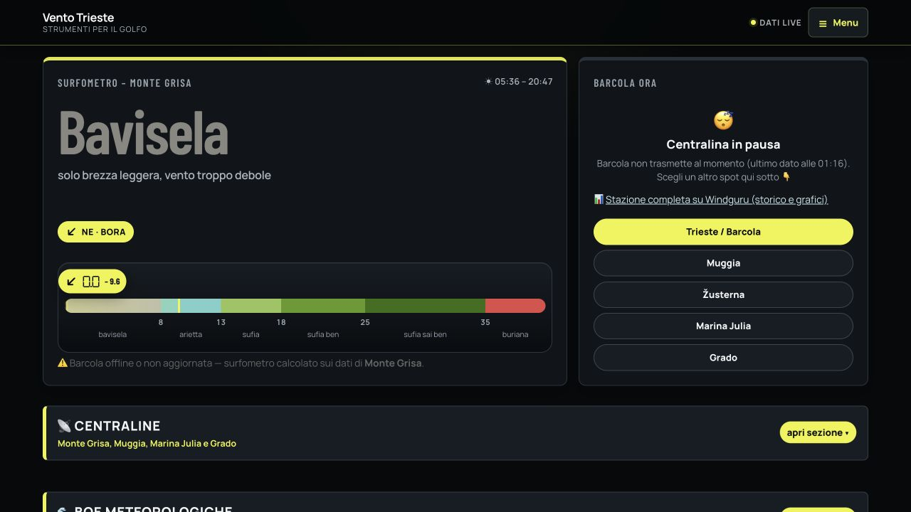
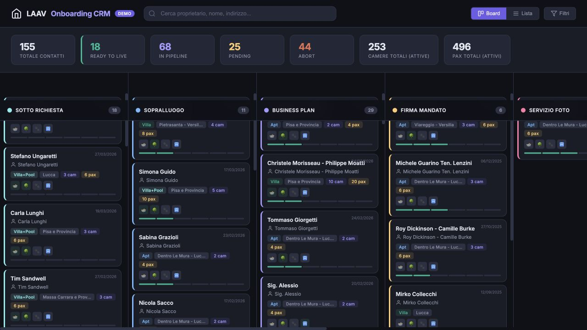

Metto ordine alla base
Arricchimento, deduplicazione e struttura dei database. Un’unica fonte affidabile.
- Arricchimento dati
- Analisi dei dati
- Revenue e canali
Sistemi dati · Trieste, Italia
Database, dashboard, app interne e automazioni per affitti brevi, turismo e imprese reali.
Ritratto Carlo Borlenghi — Trieste ottobre 2023
Cosa costruisco
Arricchimento, deduplicazione e struttura dei database. Un’unica fonte affidabile.
Dashboard e app interne che trasformano i dati operativi in decisioni quotidiane.
Web, Apps Script e flussi di AI agentica che fanno circolare le informazioni senza attriti.
Risultati selezionati
Progetti in corso tra affitti brevi, immobiliare e gestione di tour.


Database, dashboard, app interne e automazioni AI per oltre 300 unità di lusso in Toscana e 80 appartamenti nella regione della Jungfrau.

Un database pulito alla base di un’agenzia immobiliare: operazioni, annunci, portali, contatti e vendite finalmente connessi.

 Tech + operazioni
Tech + operazioni
Prenotazioni, CRM, pipeline commerciali, brand, itinerari e tutta l’operatività delle spedizioni tra vela e arrampicata.
Esperienza
Dati, operazioni e sviluppo commerciale. Seleziona un ruolo per la storia completa.
Esperienze precedenti
Progetti
Dalla gestione di una villa sul lago alla costruzione di sistemi di prenotazione e operazioni per tour.
 Proprietario e hostVilla VolpeLa villa di lusso con le migliori recensioni sul Lago d’Orta ↗
Proprietario e hostVilla VolpeLa villa di lusso con le migliori recensioni sul Lago d’Orta ↗
 Direttore tecnicoVertical Sailing TourSpedizioni tra vela e arrampicata ↗
Direttore tecnicoVertical Sailing TourSpedizioni tra vela e arrampicata ↗
 Web e prenotazioniIl MetroneSito web e calendario prenotazioni ↗
Web e prenotazioniIl MetroneSito web e calendario prenotazioni ↗
 Consulenza privataDame MaltaWeb, distribuzione e dati ↗
Consulenza privataDame MaltaWeb, distribuzione e dati ↗
 Partner e primo investitoreTrips CommunityIl primo hotel NFT prenotabile della storia ↗
Partner e primo investitoreTrips CommunityIl primo hotel NFT prenotabile della storia ↗
Dev · Vibe coding
Piccole app e script nati da esigenze reali. Pubblicare una prima versione e migliorarla nel tempo.
Affitti brevi · Strumento
Quando sono in vacanza i mercati che possono davvero raggiungere la tua casa? Metti la casa sulla mappa, scegli quanto lontano arrivano in auto e in aereo, e guarda festività, ponti e vacanze scolastiche di ognuno.
MisurareTempi di guida reali verso 131 aree metropolitane: la forma sulla mappa non è un cerchio.
Raccogliere1.318 festività e 780 periodi scolastici, regione per regione.
OrdinareUn punteggio per settimana: dove tenere il prezzo e dove fare campagna.
Finanza personale · Strumento
Pago 850 € al mese: mi conviene comprare? Non «rata contro affitto», ma quanto patrimonio netto ti resta dopo N anni. Muovi gli slider e lo vedi.
ModellareAmmortamento, costi d'acquisto, manutenzione e fisco.
Rendere simmetricoChi affitta investe anticipo e differenza mensile.
Rendere leggibileVerdetto fisso in cima, il resto richiudibile.

Desktop + smartphoneDati meteo · Web app
Una domanda locale, risposta a colpo d’occhio: dove sta lavorando il vento adesso? Stazioni, raffiche, previsioni, mare e webcam per il Golfo di Trieste.
RaccogliereLetture da più fonti e stazioni locali.
NormalizzareApps Script e un relay leggero.
TradurreVento grezzo in linguaggio semplice, mobile first.
Strumento personale · PWA
Il metodo di Igor Sibaldi come quaderno guidato: 150 desideri in brutta, i 101 definitivi, la lettura quotidiana. Verifica le regole mentre scrivi e funziona offline.
Prova l’app
Script → KPI → AzioniScript operativi · Dashboard
La dashboard è solo l’ultimo livello. Il lavoro vero è negli script dietro: pulire gli input, derivare gli stati, calcolare i KPI — senza report manuali.
Fuori ufficio
Lo sport è il mio punto fermo. Un diario visivo delle cose che mi rimettono in equilibrio.


Contatti
Hai dati disordinati o un’operatività che non riesce più a crescere?
Dati e arricchimento dei database
Sono tornato nell’azienda in cui ho mosso i primi passi nel property management, questa volta sul fronte dati, guidando il livello informativo alla base di un’agenzia immobiliare.
Consulente digitale e dati · Freelance, da remoto
Due realtà europee di riferimento negli affitti brevi: Lucca Apartments & Villas (oltre 300 unità e più di 20 M€ di ricavi lordi) e Wengen Apartments (80 unità e oltre 5 M€ di ricavi lordi). Insieme superano le 380 unità gestite. Supporto entrambi i team su dati, tecnologia e automazione.
Direttore Tecnico
Un tour operator che organizza spedizioni tra arrampicata e vela nel Mediterraneo, unendo montagna e navigazione in un unico viaggio. Come direttore tecnico seguo tecnologia, dati e operazioni dietro ogni stagione.
Consulente e specialista tecnologico
AJL Atelier è una società di consulenza specializzata nel settore degli affitti brevi. Ho lavorato come consulente e specialista tecnologico con property manager e operatori attivi in diversi mercati.
Responsabile sviluppo commerciale
Seably è una piattaforma SaaS B2B per la formazione marittima online, utilizzata da compagnie di navigazione e marittimi in tutto il mondo. Ho seguito sviluppo commerciale, dati e sponsorizzazioni.
Responsabile Logistica
Un evento velico itinerante lungo le coste italiane, con un villaggio mobile da montare e smontare a ogni tappa. Ho gestito la logistica necessaria per spostarlo attraverso il Paese.
Direttore Sportivo
La Barcolana si svolge ogni ottobre nel Golfo di Trieste ed è la regata velica più grande del mondo. Come direttore sportivo ho gestito l’intera componente agonistica di un evento con migliaia di barche sulla stessa linea di partenza.
Responsabile Revenue & Canali
All’epoca Trieste Villas era una società di property management. Ho guidato revenue e channel management, coordinando le operazioni quotidiane degli affitti sull’intero portafoglio.
Responsabile partner · Azienda successivamente acquisita
Bluewago era un tour operator dedicato alla vela, successivamente acquisito. Come responsabile partner ho costruito e gestito sia l’offerta — skipper e itinerari — sia la domanda — prenotazioni e contatti.
Alberto Broggi · Skipper — patente nautica oltre le 12 miglia (2013)
Sono cresciuto navigando con mio nonno su un ketch di 6,9 m al Lago d’Orta, poi cinque stagioni come istruttore di windsurf a Porto Pollo, in Sardegna. Dal 2013 navigo come skipper ed equipaggio tra Mediterraneo, Atlantico e Artico — dalle vacanze in flottiglia alle regate su maxi yacht.
Link diretto: bebroggi.it/it/#cv-velico